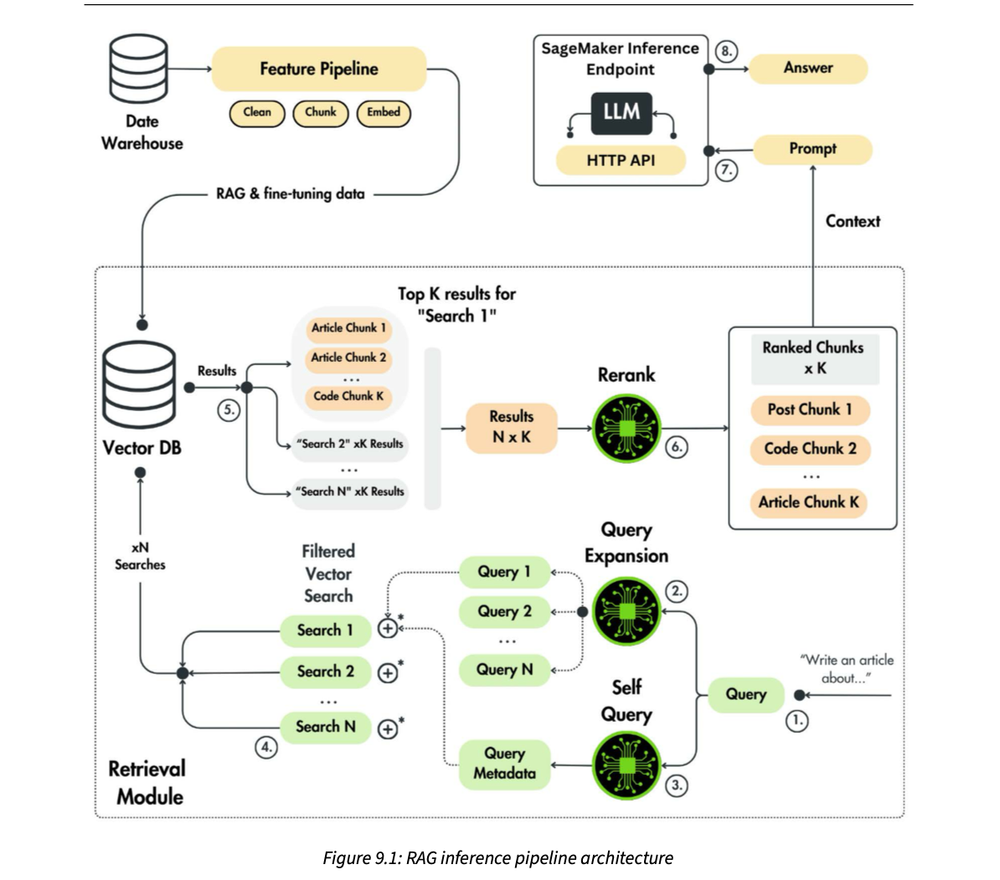
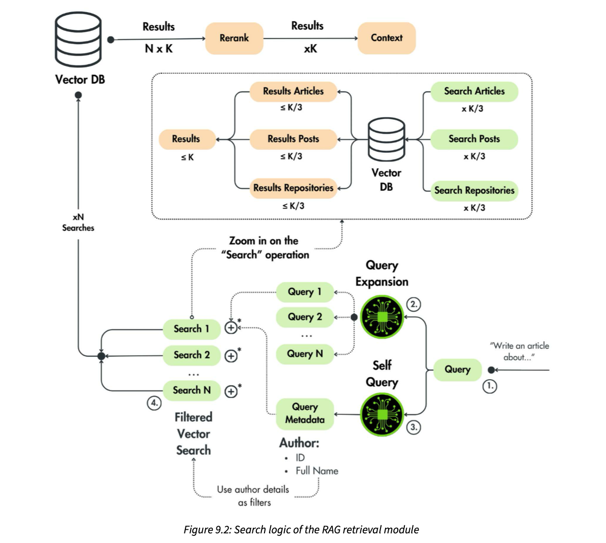
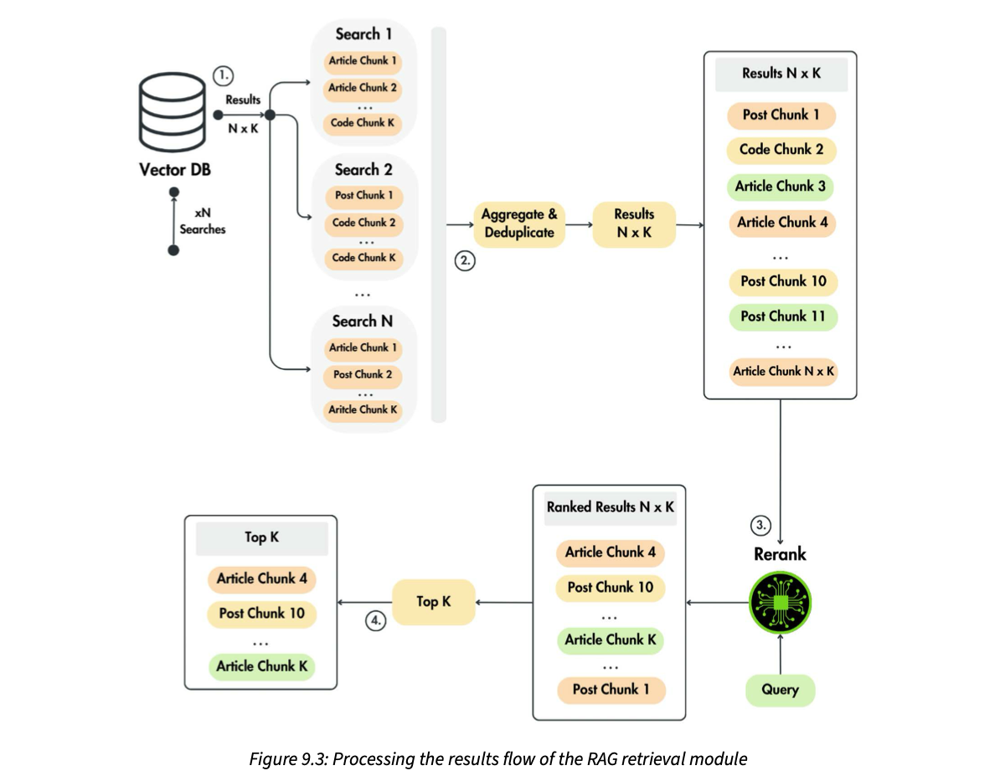
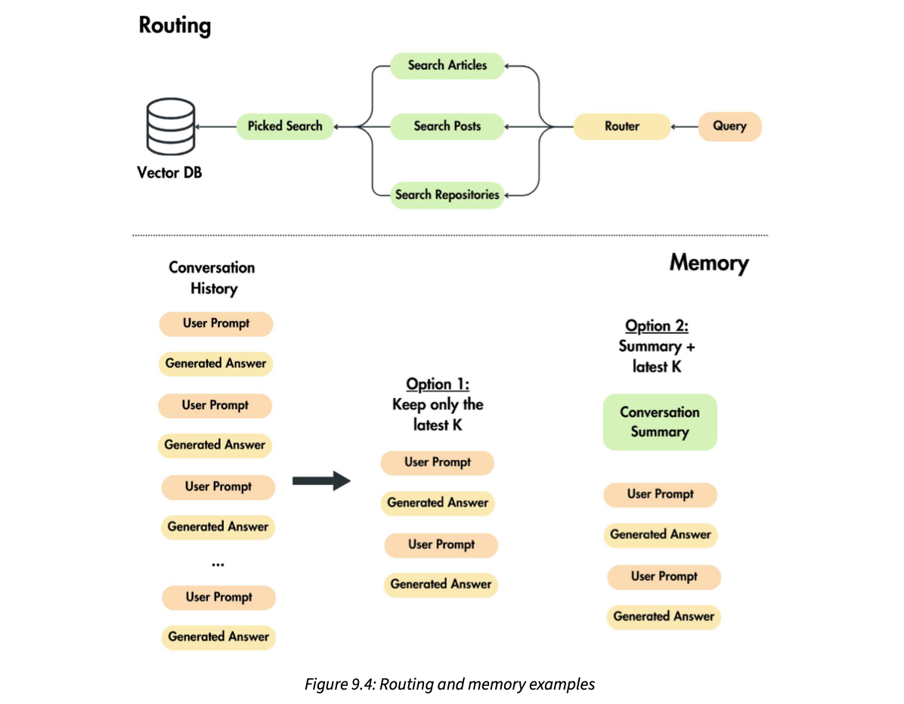

Chapter 4 filled the vector DB (database). This chapter builds the part that runs on every user request: take a question, find the most useful chunks, put them in a prompt, and call the fine-tuned LLM Twin. The authors argue that the retrieval step is where most RAG (retrieval-augmented generation) code and most of the "magic" lives, so they spend the chapter on four advanced retrieval techniques: query expansion (ask the question several ways), self-querying (pull metadata such as the author's name out of the question), filtered vector search (use that metadata as a hard filter), and reranking (score every candidate chunk against the question with a cross-encoder and keep the top K). Each is a small class behind a common interface, and a ContextRetriever glues them together: expand, search all queries in parallel, merge, deduplicate, rerank. Finally a five-line rag() function joins retrieval, a prompt template and the LLM call, and the chapter ends with upgrades you could add next: conversation memory, a router, hybrid (keyword + vector) search and multi-index search.
Read the rows top to bottom. Each orange box is the idea the next row reacts to. One sentence for the whole chapter: one embedding of one question is a weak search, so widen it (expansion), narrow it with hard facts (self-query + filter), then pick the best few with a slower, sharper judge (rerank) before calling the LLM.
A quick recap of the story so far. In Chapter 4 the RAG feature pipeline took documents from the data warehouse, cleaned them, split them into chunks, turned each chunk into an embedding, and loaded everything into the vector DB. So the vector DB is now full and ready to be searched. In Chapters 5 and 6 the LLM Twin model was fine-tuned, and in Chapter 8 it was optimized for inference. So the model is ready for production too. What is left is the code that runs when a user actually asks something.
The RAG method naturally splits into three modules:
The authors build only two Python modules. The retrieval module gets the advanced RAG techniques that improve the search. They deliberately do not build a separate "augmentation" module: that would be overengineering, which they try to avoid. Instead one inference service takes the user query plus the retrieved context, builds the prompt, and calls the LLM. Glue the two together and you have an end-to-end RAG flow.
Deploying the fine-tuned LLM Twin to AWS SageMaker as an inference endpoint gets the whole of Chapter 10. So this chapter focuses on the advanced retrieval module. Why give retrieval a whole chapter? Because that is "where the magic happens" in a RAG system. Most of the RAG inference code is written at the retrieval step, not at the LLM call. Retrieval is where you wrangle your data so that the most relevant data points come back from the vector DB, so most advanced RAG logic lives there.
The chapter has three topics:
By the end you should be able to build an advanced RAG retrieval module, augment a prompt with the retrieved context, and call an LLM for the final answer: a production-ready RAG inference pipeline, end to end.
A wedding caterer. The kitchen (the LLM) can cook anything, but the dish is only as good as the ingredients the runner brings from the godown (retrieval). Most of the skill is in the runner: knowing which shelf, which brand, which batch is fresh. The "augment" step is just putting the ingredients on the cook's counter in order; nobody hires a separate person for that. Where it breaks: a cook notices a rotten tomato; an LLM often uses whatever context you give it, which is why retrieval quality matters even more.
An LLM answer with RAG can only be as good as the context. If retrieval returns the wrong chunks, the best model writes a fluent wrong answer. The LLM call itself is one HTTP request, so there is little code to write there. Retrieval, on the other hand, involves several model calls, filters, parallel searches and sorting, which is why the code concentrates there.
"In a RAG system, where do you spend your engineering effort?" → "On retrieval. The generator is mostly a prompt template and an API call. Answer quality is bounded by whether the right chunks reach the prompt, so I invest in query rewriting, metadata filters, reranking and retrieval evaluation. In a RAG memory system, that is the difference between the agent remembering the right fact or a nearby wrong one."
Before writing code, the book lays out the software architecture. The inference pipeline starts with the user's input query, uses the retrieval module to fetch context based on that query, and calls the LLM SageMaker service to generate the final answer.

How to read this figure. Two worlds. Top left: the Data Warehouse feeds the Feature Pipeline (Clean → Chunk → Embed), whose output ("RAG & fine-tuning data") drops into the Vector DB. That is Chapter 4, running on its own. The dotted box is the Retrieval Module; follow the circled numbers. ① A query like "Write an article about…" enters at the bottom right. ② Query Expansion (an LLM icon) fans it into Query 1…N. ③ Self Query (another LLM icon) produces Query Metadata; its dotted line joins each search through the ⊕ symbols, meaning "add the metadata as a filter". ④ Filtered Vector Search: Search 1…N go up to the Vector DB ("xN Searches"). ⑤ Each search returns its own top-K list ("Top K results for Search 1", "Search 2 xK results"…), which are gathered into Results N × K. ⑥ Rerank turns that pile into Ranked Chunks × K (a mix of post, code and article chunks). The ranked chunks leave the box as Context, become a ⑦ Prompt, go to the LLM behind an HTTP API on a SageMaker Inference Endpoint, and ⑧ an Answer comes back.
The key architectural point: the feature pipeline and the retrieval module are independent processes.
| Feature pipeline (Ch.4) | Retrieval module (this chapter) | |
|---|---|---|
| Runs where | On a different machine | Inside the inference pipeline |
| Runs when | On a schedule | On demand, on every user request |
| Job | Keep the vector DB populated with the latest data | Read the latest features and return the most relevant, most similar data points for the query |
| Talks to the other via | Only the vector DB (the feature store) | |
Separating the two concerns means the vector DB always has the newest data (feature freshness), and the retrieval module sees those newest features on every request. The retrieval module's input is the user's query; its output is the set of data points used to guide the LLM toward the final answer.
09:00 Paul publishes a LinkedIn post. 09:30 the scheduled feature pipeline crawls, cleans, chunks, embeds and upserts it into Qdrant. 09:31 a user asks the LLM Twin about that topic. The retrieval module, which never stopped serving requests, simply finds the new chunk. Nobody redeployed the inference service.
Times are modelled for illustration; the book only says the feature pipeline runs on a schedule.
A railway enquiry counter. Back-office staff update the train-status board every few minutes (feature pipeline). The clerk at the window (retrieval module) never updates the board; he just reads it for every passenger who asks. Either can be slow or restarted without stopping the other. Where it breaks: the clerk can't tell a passenger about a train the board hasn't been updated with yet; freshness is only as good as the schedule.
This is the classic write path / read path split, the same idea as CQRS (command query responsibility segregation) in backend systems. Writes are heavy and batchy (crawling, embedding many documents); reads are light and latency-sensitive (one question at a time). Scaling, scheduling and failure handling are completely different for each, so they live in separate processes connected only through the store.
"How would you architect a RAG system for production?" → "Split it into an offline ingestion pipeline and an online retrieval-plus-generation service, connected only through the vector store. Ingestion runs on a schedule or on change-data-capture events and keeps the index fresh; the online path is stateless, scales horizontally and reads whatever is in the index on each request."
The book walks Figure 9.1 step by step. In plain words:
Follow one real-looking request through all eight steps. Watch how many items are in flight at each step.
The query and chunk names are modelled for this page; the step logic follows the book.
With the book's defaults later in the chapter (expand_to_n_queries = 3, k = 3): 1 query → 3 queries → 3 searches → up to 3 × 3 = 9 candidate chunks → after deduplication maybe 7 → reranked → 3 chunks go into the prompt. The LLM is called once for the answer, plus once each for expansion and self-query (GPT-4o-mini), so one user request costs 3 LLM calls and 1 cross-encoder batch.
The "maybe 7" after dedupe is modelled; plate 15 shows why each search really returns ≤ K.
Asking a librarian for help with a school project. She rephrases your request three ways ("history of trains", "Indian Railways 1853", "steam engines"), notes that you only want books by one author (self-query), checks three shelves with that filter, piles up all the books, removes the duplicate copies, skims each one against your actual question, and hands you the best three. Then you write the essay (the LLM). Where it breaks: a librarian reads books slowly but understands them; a cross-encoder is fast but only judges each chunk against the question, not against each other.
It is a widen-then-narrow funnel. Expansion widens recall (find everything possibly relevant). Filtering and reranking restore precision (keep only what is truly relevant). Cheap operations (vector search) run on many items; the expensive, accurate one (cross-encoder) runs only on the shortlist.
"Walk me through what happens when a user query hits your RAG service." → "Rewrite the query into several variants and extract metadata filters with a small LLM; embed each variant and run filtered vector searches in parallel; merge and dedupe the N×K hits; rerank them against the original question with a cross-encoder; keep the top K; render them into a prompt template and call the generator."
The retrieval module uses advanced RAG techniques at all three stages introduced in Chapter 4's overview of advanced RAG:
| Stage | Technique in the LLM Twin | What it changes |
|---|---|---|
| Pre-retrieval | Query expansion, self-querying | The query, before any search |
| Retrieval | Filtered vector search | How the vector DB is searched |
| Post-retrieval | Reranking | Which results survive, and in what order |
Before the techniques, the book sets up the Python interfaces they share (file llm_engineering/application/rag/base.py in the book's repo).
A prompt template factory standardizes how prompt templates are created. It is an abstract class (it inherits from ABC, Python's abstract base class, and from Pydantic's BaseModel) with one method, create_template(), that returns a LangChain PromptTemplate. The authors mostly avoid leaning on LangChain because they want to build things themselves and understand the engineering underneath. But a few LangChain objects, like PromptTemplate, speed up development without hiding much, so they use them.
A RAGStep interface standardizes the advanced steps such as query expansion and self-querying. It has one abstract method, generate(query, …). Because these steps usually call another LLM, the constructor takes a mock flag. In mock mode a step skips the paid API call and returns something trivial, which cuts cost and debugging time during development.
# sketch with our own names (same shape as the book's base.py)
from abc import ABC, abstractmethod
class TemplateMaker(ABC): # book: PromptTemplateFactory (ABC + BaseModel)
@abstractmethod
def build(self): # book: create_template() -> PromptTemplate
...
class PipelineStep(ABC): # book: RAGStep
def __init__(self, fake: bool = False):
self._fake = fake # book: self._mock, skip LLM calls in dev
@abstractmethod
def run(self, query, *args, **kwargs): # book: generate(query, ...)
...What each part does. The abstract method forces every concrete step to offer the same entry point, so ContextRetriever (plate 17) can call any step the same way. The mock/fake flag is set once in the constructor and checked at the top of generate().
Behaviour per the book's code; example strings modelled.
A dabbawala route. Every dabbawala follows the same handover protocol (the interface): pick up at a fixed point, hand over at a fixed point. Whether the tiffin was cooked at home or bought outside doesn't matter to the next person. The mock flag is a practice run with empty tiffins: you test the route without paying for food. Where it breaks: a practice run with empty tiffins can't tell you whether the food would have spilled; mock mode can't tell you whether the real LLM output parses correctly.
This is the strategy pattern plus a test double built into the class. Every step has the same shape, so steps can be swapped, chained or disabled. The mock path also makes the pipeline runnable offline, which is useful in CI (continuous integration) where you don't want API keys or bills.
"How do you keep LLM pipelines testable and cheap during development?" → "Put every LLM-dependent step behind a common interface with a mock mode that returns deterministic outputs without calling the API. Unit tests and local runs use mock mode; integration tests use the real model on a small set. It also lets me swap providers without touching the orchestrator."
RAGSteps).Advanced RAG needs more than the raw text of a question. The book wraps the user's input in a domain entity called Query. It inherits from VectorBaseDocument, the OVM (object-vector mapping) base class from Chapter 4, so a query can be saved to or loaded from the vector DB like any other document. Its inner Config sets the category to QUERIES.
The fields that combine the query with metadata:
content: the query text.author_id: an optional UUID4 (a random unique id) taken from the query. It becomes a filter in the vector search so only chunks by that author are returned.author_full_name: an optional string, used to look up the author_id.metadata: a dictionary for anything else, empty by default.Two helper methods:
from_str() (a class method) builds a Query straight from a string and standardizes cleaning: it strips leading and trailing spaces and newlines.replace_content() returns a new Query with different text but the same id, author_id, author_full_name and metadata. Useful whenever you rewrite the text (preprocessing, normalization, or query expansion in plate 8) without losing the identifiers.Then EmbeddedQuery extends Query with one more field, embedding (a list of floats). It holds everything needed to run a vector search on Qdrant or another vector DB.
# sketch, our names: a question object that keeps its metadata through rewrites
class Question(VectorDoc): # book: Query(VectorBaseDocument)
text: str # book: content
writer_id: UUID | None = None # book: author_id
writer_name: str | None = None # book: author_full_name
extra: dict = Field(default_factory=dict)
@classmethod
def parse(cls, raw: str) -> "Question":
return cls(text=raw.strip("\n ")) # trim spaces/newlines at both ends
def with_text(self, new_text: str) -> "Question":
# same id + writer + extra, only the text changes
return Question(id=self.id, text=new_text, writer_id=self.writer_id,
writer_name=self.writer_name, extra=self.extra)
class VectorQuestion(Question): # book: EmbeddedQuery
vector: list[float]Type a messy query (leading newlines and spaces are kept in the box). See what from_str stores, then what a rewrite keeps.
The id and author values are made up (modelled). Author fields stay empty until self-query fills them (plate 10).
A courier parcel. The contents (query text) may get repacked along the way, but the airway bill (id, sender, notes) stays stuck on the box. replace_content is repacking with the same airway bill. EmbeddedQuery is the parcel after it gets its sorting barcode (the embedding) so the machines can route it. Where it breaks: a repacked parcel is the same parcel; a rewritten query is a new object that only shares the old one's labels.
Query expansion produces several new texts, but the filter from self-query (author_id) must apply to all of them. Copying metadata into every rewritten Query is what lets each of the N searches use the same filter without passing extra arguments around. Making Query a vector document also means queries could be logged into the vector DB later for analytics.
"How do you model a query in a RAG service?" → "As a typed object, not a bare string: text, extracted filters like tenant or author, a free-form metadata dict, and a stable id for tracing. Rewrites create new objects that inherit the filters and id, and an embedded subtype carries the vector. That keeps every downstream step's inputs explicit."
VectorBaseDocument) · plate 8 (replace_content in query expansion) · plate 17 (EmbeddingDispatcher makes the EmbeddedQuery).The pre-retrieval step is optimized with two methods: query expansion and self-querying. Both work hand in hand with the filtered vector search in the retrieval step (plate 11). The book explains query expansion's code first, then self-querying.
Both methods call OpenAI's API: query expansion asks it for variations of the question, and self-querying asks it to extract metadata. When the book was written, all examples used GPT-4o-mini. OpenAI's models change quickly and this one may be deprecated, but that's easy to handle: the model name lives in the .env file as the OPENAI_MODEL_ID environment variable, so you change one line, not the code.
Query objects.Query with author fields filled.Using a small, cheap model for these helper calls and the expensive (or fine-tuned) model only for the final answer is a common cost pattern. Any model with a chat API would do; the step only needs to follow a short instruction reliably at temperature 0.
Before a chartered accountant files your return, a junior clerk does two quick things: rewrites your messy request into the standard sections, and notes your PAN so only your documents are pulled. Cheap, fast help before the expensive expert. Where it breaks: a clerk who misreads your PAN pulls nobody's documents; a self-query that extracts the wrong name filters out everything.
Both methods are LLM-as-a-function: a fixed prompt in, a string out, parsed into structured data. Setting temperature=0 (plates 8 and 10) makes the output as repeatable as possible, which matters when code parses it.
"How do you avoid hard-coding a model that may be deprecated?" → "Model ids are configuration: an env var read by a settings object, never a literal in the code. Then a deprecation is a config change plus a quick eval run, not a code change and redeploy of logic."
.env configuration).The problem. A normal retrieval step searches the vector DB with one vector: the embedding of the original question. That vector covers only a small area of the embedding space. If the embedding misses some of the information or nuance in your question, the retrieved context may not be relevant. Documents that are related in meaning but not near the query vector get overlooked.
The solution: query expansion. Ask an LLM to write several queries based on the original question. Each one captures a different facet. Embedded, they land in other areas of the embedding space that are still relevant to the original question, so the chance of retrieving more relevant documents goes up.
It can be as simple as a detailed zero-shot prompt (instructions only, no examples) asking the LLM for alternative queries. After it, you have N queries instead of one, which means N searches.
The cost. More searches can increase latency. So experiment with how many queries you generate to make sure retrieval still meets your application's requirements. You can also parallelize the searches, which cuts latency drastically; the book does exactly that in ContextRetriever (plate 17).
Query expansion is also called multi-query; same principle. LangChain's version is called MultiQueryRetriever.
A 2-D cartoon of the embedding space. Green dots are documents relevant to the user's intent; grey dots are not. Each circle is one query's "top-K neighbourhood". Slide N.
Positions, radius and latencies are modelled (40 ms per search sequential; parallel ≈ slowest single search + 10 ms overhead).
Say one embedding + vector search takes 40 ms and the expansion LLM call takes 600 ms. N = 3 sequential: 600 + 3 × 40 = 720 ms. N = 3 in parallel: 600 + ~50 = 650 ms. N = 5 parallel: still ~650 ms of search time, but 5 × more vector DB load. The expansion LLM call, not the searches, usually dominates.
All numbers modelled. The book only says latency grows with N and that parallelizing reduces it drastically.
Searching for a lost phone in a big house. One person standing in the hall with a torch (one query vector) sees one patch of floor. Three people with torches in three rooms (three expanded queries) cover far more ground, and if they search at the same time (parallel) it takes no longer than one. Where it breaks: people searching rooms that don't matter (bad expansions) just add noise, which is why reranking (plate 12) follows.
An embedding squeezes a whole question into one point. A question with several aspects ("best types of advanced RAG methods") ends up at the "average" of those aspects, possibly far from any single document that covers just one aspect in depth. Rephrasings shift the point toward each aspect. Retrieval recall (fraction of relevant documents found) goes up; precision may go down, which the reranker fixes.
"Your RAG misses obviously relevant documents. What do you try?" → "First check chunking and the embedding model, then add query expansion: generate 2–4 rewrites with a small LLM, search them in parallel, union the results and rerank against the original question. It raises recall at the cost of an extra LLM call and more vector DB queries, so I'd tune N against a latency budget."
The class lives in the book's repo at llm_engineering/application/rag/query_expanison.py (that spelling is the repo's). It imports LangChain's ChatOpenAI, the Query entity, the global settings, the RAGStep base and the QueryExpansionTemplate.
expand_to_n (how many queries you want in total) is greater than 0.expand_to_n copies of the original query, which simulates expansion without calling the API.QueryExpansionTemplate, asking for expand_to_n − 1 new queries, because the original will be kept as one of them. Create a ChatOpenAI client with the model id and API key from settings and temperature=0 for deterministic output.prompt | model, LangChain's chain syntax) and invoke it with the user's question. The model's text is in response.content.Query made with replace_content(), so each keeps the original's id and metadata.# sketch, our names: expand one question into n (original + n-1 rewrites)
SEP = "#next-question#"
def expand(question, n, llm, fake=False):
assert n > 0
if fake:
return [question] * n # no API call in dev
prompt = rewrite_prompt(how_many=n - 1, sep=SEP)
raw = (prompt | llm).invoke({"question": question}).content
out = [question] # original always first
for piece in raw.strip().split(SEP):
if (piece := piece.strip()): # skip empty pieces
out.append(question.with_text(piece))
return outQueryExpansionTemplate (in prompt_templates.py) implements the factory interface from plate 4. Its prompt has five parts: (1) a role line (an AI assistant); (2) the ask: produce {expand_to_n} alternative versions of the user's question; (3) the reason, which helps the model aim well: the versions are for retrieving documents from a vector DB and should offer different perspectives, to get around the weaknesses of distance-based similarity search; (4) the output format: versions joined by {separator}; (5) the slot for the original {question}.
separator property returns a unique string, #next-question#, that the code later splits on. A string unlikely to appear inside a real question is what makes the split safe.create_template(expand_to_n) returns a LangChain PromptTemplate. It passes separator and expand_to_n as partial variables: they are filled in when the template is built and stay fixed at runtime. Only {question} is an input variable that changes on every call.The book runs the module with python -m llm_engineering.application.rag.query_expansion, using the query "Write an article about the best types of advanced RAG methods." and expand_to_n=3. The log shows three lines: the original query first, then one rewrite asking which advanced RAG methods are most effective and how to apply them, and one asking for an overview of the top advanced retrieval-augmented generation techniques. The rewrites added detail and new angles (effectiveness, overview) to the original request.
The raw reply below is modelled (notice the stray spaces and the empty piece at the end). Edit it and press parse.
A teacher asks a student to "say this question three different ways, one per line, and put a ### between them". The ### is the separator, the teacher's own words are question one, and "three" was decided before class (partial variable) while the question changes each period (input variable). Where it breaks: a student never writes ### inside a sentence by accident; an LLM occasionally ignores the format, so robust code must handle a reply with no separators (it would just yield one extra query).
The LLM returns free text. A unique delimiter is the cheapest way to get a list out of it without JSON mode. temperature=0 makes the rewrites mostly repeatable, so the same question gives the same search behaviour (easier to debug and cache). Keeping the original query in the list guarantees the expansion can only add coverage, never lose the user's own wording.
"How do you get structured output from a query-rewriting LLM?" → "Either a unique separator token and a split, as here, or JSON/structured-output mode with a schema. I always keep the original query, strip and drop empty items, cap the number of rewrites, and fall back to the original alone if parsing fails, so the step can't break retrieval."
replace_content) · plate 17 (called inside ContextRetriever.search with expand_to_n_queries=3).The problem. When you embed a query, you can't guarantee that every aspect your use case needs is present in the vector with enough signal. Say retrieval must depend on the tags in the user's input, 100% of the time. You have no control over how much the embedding emphasizes those tags. Embedding the prompt alone, you can never be sure the tags are represented strongly enough to matter when distances to other vectors are computed. The same is true for any metadata you need during search: IDs, names, categories.
The solution: self-querying. Use an LLM to extract the important metadata from the query, and use it alongside the vector search as filters. Self-querying can extract whatever fields matter to your business: tags, IDs, number of comments, likes, shares, and so on. After extraction you have full control over how that metadata affects retrieval. In the LLM Twin, the extracted field is the author's name, used as a filter. Self-queries work together with filtered vector search (plate 11).
A modelled similarity score is mostly about topic. Add the author's name to the query and see how little the ranking moves, then switch to a hard filter.
Scores are modelled to show the idea: the name shifts similarity only a little, while a filter removes other authors completely.
On a matrimonial site you type "engineer from Pune, Marathi-speaking, likes cricket". A pure "vibe" match might show a great cricket-loving engineer from Chennai, because most of your words matched. The site instead pulls out "city = Pune" and "language = Marathi" as hard filters and only then matches the vibe. Where it breaks: if the extractor misreads "Pune" as "Pune district" and your data uses "Pune city", the filter silently returns nothing; extracted values must match stored values exactly.
An embedding is a lossy summary weighted toward topic and meaning. A name is a few tokens among many and may move the vector very little; worse, many authors write similar text. Turning it into a structured filter moves the constraint out of fuzzy geometry and into an exact database condition, which is guaranteed to hold.
"How do you enforce constraints like tenant, user or date in vector search?" → "Never rely on the embedding for them. Store them as payload metadata, extract them from the request (from auth context, or with an LLM self-query for free text), and apply them as pre-filters in the vector DB. For multi-tenant RAG memory, the tenant/user filter should come from the authenticated session, not from the LLM."
The class is in llm_engineering/application/rag/self_query.py. Imports: ChatOpenAI, an app utils module, the UserDocument entity, Query, settings, RAGStep and SelfQueryTemplate. SelfQuery inherits from RAGStep and implements generate(query) → Query.
SelfQueryTemplate and a ChatOpenAI model with temperature=0, same as query expansion.user_full_name."none", there was no user in the query; return the original query.split_user_full_name), then get or create a UserDocument with those names.query.author_id = user.id and query.author_full_name = user.full_name, and return the query. Later steps use these fields.# sketch, our names
def extract_author(question, llm, users, fake=False):
if fake:
return question
reply = (author_prompt() | llm).invoke({"question": question}).content
name = reply.strip("\n ")
if name == "none": # the prompt's "nothing found" token
return question
first, last = split_name(name) # book: utils.split_user_full_name
person = users.get_or_create(first=first, last=last) # book: UserDocument
question.writer_id = person.id # book: author_id -> used as filter
question.writer_name = person.full_name # book: author_full_name
return questionSelfQueryTemplate tells the model to extract the user name or user id from the question and reply with only that value (a name like "John Doe" or an id like "1345256"), or the token none if neither is present. Unlike the zero-shot expansion prompt, this one uses few-shot learning: it shows three solved examples before the real question:
| The three example cases (our own wording) | Expected reply |
|---|---|
| A question that introduces a person by name, e.g. Hi, Asha Rao here, draft a note on caching | the name only: Asha Rao |
| A question with no name or id, e.g. Draft a note on caching | none |
| A question that gives a numeric user id, e.g. User 9081 here, draft a note on caching | the id only: 9081 |
The {question} placeholder is the only input variable, replaced with the real question on every call. By extracting the metadata explicitly, self-querying overcomes the limits of relying only on embedding semantics.
With python -m llm_engineering.application.rag.self_query and the query "I am Paul Iusztin. Write an article about the best types of advanced RAG methods.", the log shows the extracted author_id (a UUID beginning 900fec95…) and author_full_name = Paul Iusztin: both extracted correctly.
A toy extractor that imitates what the few-shot prompt asks for: a "My name is / I am" name, a "user id is" number, or none. Then it fills the Query fields the way generate() does.
The toy uses simple patterns, not an LLM; ids are modelled. The last option shows a case a real LLM may catch but a naive pattern misses, which is why the book uses an LLM.
A bank teller's slip: before anything else, she writes your account number in the top box, copied from whatever you said ("I'm Ramesh, account ending 4412…"). If you didn't say it, she writes "none" and helps you generally. Where it breaks: the teller asks you when unsure; this prompt never asks back. It guesses or says none.
Few-shot examples pin down the output format (just the value, nothing else) far better than instructions alone, which is crucial because code compares the reply to the literal string "none". get_or_create means a name never seen before still produces a user id; the filter then matches no chunks, which is the honest result (no content by that author).
Reply Paul Iusztin → split into Paul, Iusztin → users table lookup → id 900fec95-… → every later search carries author_id == "900fec95-…". Reply none → no filter; all authors are searched.
"How would you turn free-text constraints into filters?" → "A small LLM with a few-shot or structured-output prompt that returns only the fields I support, with an explicit 'none' value. I validate the result against known values (e.g. look the author up in a users table) before applying it, and fall back to an unfiltered search if extraction fails, so a bad extraction can't zero out recall silently."
author_id becomes a Qdrant filter) · Ch.3 (the UserDocument entity and the data warehouse).Vector search retrieves information by semantic similarity. On its own ("plain" vector search) it has problems with both accuracy and latency, because it looks only at how close the numbers are, ignoring contextual or categorical details that may decide relevance.
Problem 1 · similar but irrelevant. Embeddings capture general meaning, so content that shares wording or topic can score high even when it doesn't fit the query's intent or constraints. The book's example: a search for "Java" may return documents about the programming language or the Indonesian island, depending only on similarity, giving ambiguous or misleading results.
Problem 2 · scale. As the dataset grows, plain vector search must compare similarity across the whole vector space when nothing is filtered. That raises latency, slows responses and burns more compute, which is bad for real-time or large-scale applications.
The solution: filtered vector search. Apply extra criteria (metadata tags, categories) to shrink the pool before computing similarities. Results are limited to items that fit the query's intent, which removes irrelevant documents that only matched on meaning: better accuracy. Fewer comparisons also means less compute and faster responses: better latency, crucial for real-time interaction or heavy query loads.
The filter metadata usually comes from the user's input, so it must be extracted before querying, which is exactly what self-query did with the author's name. Hence the book's classification: processing the query in self-query counts as pre-retrieval optimization, while using that metadata inside the search counts as retrieval optimization.
With Qdrant, a filter that requires a matching author_id in each document's metadata (its payload) is built from three model classes: a Filter whose must list holds a FieldCondition on key author_id with a MatchValue. It is passed as query_filter to the search call along with the collection name, the query vector, a limit and with_payload=True.
# sketch: Qdrant search restricted to one author (our variable names)
from qdrant_client.models import Filter, FieldCondition, MatchValue
only_this_author = Filter(must=[
FieldCondition(key="author_id", match=MatchValue(value=str(writer_id)))
])
hits = client.search(
collection_name="articles",
query_vector=question_vec,
limit=3, # top-K
with_payload=True, # return metadata with each hit
query_filter=only_this_author,
)In short: plain vector search gives a foundation for semantic retrieval, but its limits slow real applications. Filtered vector search combines embeddings with contextual filtering for more accurate and efficient retrieval in RAG.
Documents, scores and the category share (30% programming, 20% travel) are modelled. Real vector DBs use an index (e.g. HNSW) so the saving is not exactly proportional, but filtering still reduces work and removes off-intent hits.
Looking for "Java" at a big bookshop. Without a filter the assistant brings a Java programming book and a Java travel guide, because both have "Java" on the cover. If you first say "computer section only", she walks straight there, checks far fewer shelves, and every book she brings fits. Where it breaks: if a great programming book was shelved in "general" by mistake (wrong metadata), the filter hides it forever.
A filter is an exact predicate on payload fields; a vector search is approximate ranking. Combining them means "rank only among items where the predicate holds". Vector DBs like Qdrant index payload fields so the filter is cheap and applied during the approximate nearest-neighbour search, rather than throwing away results afterwards (which could leave you with fewer than K).
"Pre-filtering vs post-filtering in vector search?" → "Post-filtering searches top-K then drops non-matching hits, so a selective filter can leave you with zero results. Pre-filtering (or filtered ANN, as Qdrant does) restricts candidates during the search, so you still get K matching hits and do less work. For tenant or author constraints, always filter in the engine."
author_id comes from) · plate 15 (the same filter inside _search) · Ch.4 plates 12–14 (how vector DBs and indexes work).The problem. Retrieved context can include irrelevant chunks that only:
The solution: reranking. Order all N × K retrieved chunks by relevance to the original question, most relevant first. N is the number of searches after query expansion; K is the number of chunks per search; so there are N × K chunks in total. Reranking is a key post-retrieval step that refines what the retrieval model returned.
Reranking algorithms often use advanced models like neural cross-encoders. They judge the semantic similarity between query and chunk more accurately than the first retrieval, which used embeddings and cosine similarity (explained in Chapter 4's advanced RAG overview). Then keep the top K by reranking score.
The difference: with expansion you gather candidates from several points in the embedding space, rather than just digging deeper (more than K) around one location. That is why reranking pairs so well with query expansion. Adding reranking improves the quality and relevance of the context and uses compute efficiently.
Our diagram. Bi-encoder vectors for chunks are precomputed once, so search is cheap; the cross-encoder must run once per (query, chunk) pair at request time, so it is only affordable on a shortlist.
IPL auction scouting. A first scout filters thousands of players by stats (vector search: fast, rough). Then the head coach watches video of the shortlisted 30, each one against the team's exact need (cross-encoder: slow, careful), and picks 5. Nobody has time to watch video of thousands. Where it breaks: the coach judges each player alone against the need; he doesn't check whether two picks are redundant, and neither does a cross-encoder reranker.
A bi-encoder embeds query and chunk separately; their only interaction is one dot product, so fine details ("best types of", "in production") are lost. A cross-encoder reads query and chunk together in one transformer pass, so every query token attends to every chunk token, and it outputs a relevance score directly. Better judgement, but no precomputation is possible, so cost grows with the number of candidates.
"Why add a reranker if you already have vector search?" → "Vector search is a cheap recall stage; embeddings compress meaning and miss fine query-document interactions. A cross-encoder reranker scores each (query, chunk) pair jointly and is much more precise, but it's O(candidates) at request time. So: retrieve 20–50 candidates, rerank, keep 3–5. Fewer, better chunks also cut prompt cost and the lost-in-the-middle effect."
The code is in llm_engineering/application/rag/reranking.py. It imports CrossEncoderModelSingleton (from the app's networks module), EmbeddedChunk, Query and RAGStep. The Reranker class's constructor calls the parent (to store the mock flag) and creates the cross-encoder via CrossEncoderModelSingleton(); that model scores each chunk's relevance to the query.
generate(query, chunks, keep_top_k): in mock mode it returns the chunks untouched. Otherwise six steps:
keep_top_k.# sketch, our names
def rerank(question, candidates, keep, scorer, fake=False):
if fake:
return candidates
pairs = [(question.text, c.text) for c in candidates] # 1
scores = scorer(pairs) # 2 one batch call
ranked = sorted(zip(scores, candidates), # 3
key=lambda t: t[0], reverse=True) # 4
return [c for _, c in ranked[:keep]] # 5 + 6The wrapper imports CrossEncoder from the sentence-transformers library (which scores text pairs) and SingletonMeta from the app's base module. SingletonMeta is a metaclass that enforces the singleton pattern: only one instance of the class exists in the whole application.
model_id (default from settings.RERANKING_CROSS_ENCODER_MODEL_ID) and a device (default settings.RAG_MODEL_DEVICE), both loaded from the .env file. It builds the CrossEncoder and calls .model.eval() to put the underlying network in evaluation mode, ready for inference.__call__(pairs, to_list=True). Makes the object callable like a function. It runs the model's predict() on the list of text pairs and returns the scores as a NumPy float32 array or, by default, a Python list.# sketch, our names: load the model once, expose a small interface
class OneInstance(type): # book: SingletonMeta
_made = {}
def __call__(cls, *a, **kw):
if cls not in cls._made:
cls._made[cls] = super().__call__(*a, **kw)
return cls._made[cls]
class PairScorer(metaclass=OneInstance): # book: CrossEncoderModelSingleton
def __init__(self, model_id=CFG.rerank_model, device=CFG.device):
self._m = CrossEncoder(model_id, device=device)
self._m.model.eval() # inference mode
def __call__(self, pairs, as_list=True):
s = self._m.predict(pairs)
return s.tolist() if as_list else sThe OneInstance metaclass body is a common way to write a singleton, shown for understanding; the book imports its own SingletonMeta without listing it in this chapter.
Why write a wrapper at all? Two reasons the book gives:
That completes all the advanced RAG techniques in the architecture. Next: ContextRetriever, which connects them, and how to use it with an LLM end to end.
Query: "How do I add reranking to a RAG pipeline?" The candidates arrive in retrieval order (by cosine). Press the steps; change keep_top_k.
Chunks, cosine values and cross-encoder scores are modelled. Notice the chunk with the highest cosine is not the most relevant: it shares words, not intent.
A singleton is the one pressure cooker in a joint-family kitchen: everyone uses the same one instead of each person buying their own (loading a model is slow and uses GPU memory). The wrapper is the standard whistle-count recipe: switch to an electric cooker tomorrow and the recipe still says "three whistles". Where it breaks: a shared cooker can only cook one thing at a time; a shared model in a multi-threaded server may need care around concurrent calls.
Scoring all pairs in one predict() call lets the library batch them on the GPU/CPU, much faster than looping. eval() switches off training-only behaviour such as dropout so scores are deterministic. Sorting is O(n log n) on at most N×K items (9 with the book's defaults), so it costs nothing next to the model.
9 candidate chunks → 9 (query, chunk) pairs → one batched forward pass → 9 scores, e.g. [0.12, 0.91, 0.05, 0.66, …] → sorted → keep 3. If you doubled N to 6 queries, the reranker would score up to 18 pairs: reranker cost grows linearly with N × K.
Score values modelled.
"How do you serve a reranker model in a Python API?" → "Load it once per process (singleton or app-startup dependency), set eval mode, score all pairs in a single batched call, and hide it behind a small interface like score(pairs) → list[float] so I can swap in a hosted reranking API or a different model. Cap the candidate count to bound latency."
ContextRetriever.rerank) · Ch.4 (the embedding-model singleton built the same way).As said at the start, the RAG inference pipeline divides into three parts: the retrieval module, prompt creation, and answer generation (calling an LLM with the augmented prompt). This section focuses mainly on the retrieval module, where most of the code and logic sits. Then it shows how to build the final prompt from the retrieved context and user query, and finally how retrieval, prompt creation and the LLM combine into an end-to-end RAG workflow.
One caveat: you can't test the LLM part yet. The fine-tuned LLM Twin isn't deployed to AWS SageMaker until Chapter 10. So after this section you will know how to implement the whole pipeline, but you can run it end to end only after finishing Chapter 10. (The retrieval module itself can be run now; plate 18 does exactly that.)
| Part | Where in the code | Testable in Ch.9? |
|---|---|---|
| Retrieval module | ContextRetriever (application/rag/retriever.py) | yes needs Qdrant + OpenAI key |
| Prompt creation | template inside the inference executor; EmbeddedChunk.to_context() | yes |
| Generation | call_llm_service() → SageMaker endpoint | no until Ch.10 |
Building a new metro line: tracks, stations and signalling can all be built and tested section by section, but you can't run a passenger train end to end until the rolling stock (the deployed model) arrives. Where it breaks: a metro can run a test engine; here you could point call_llm_service at any hosted model to test the flow early, the book just doesn't.
Because each part has its own interface, they can be developed and tested independently: retrieval against the real vector DB, prompt building as a pure function, generation as an HTTP client. That's the payoff of the modular design in plate 4.
"How do you test a RAG service before the model is deployed?" → "Test retrieval on its own with a labelled set of queries and expected chunks (recall@K; MRR, mean reciprocal rank), unit-test the prompt builder as a pure function, and stub the generator behind its interface. End-to-end tests come once the endpoint exists."
The ContextRetriever class (llm_engineering/application/rag/retriever.py) orchestrates the retrieval step by combining every technique so far: query expansion, self-querying, reranking and filtered vector search. Its entry point is the search() method.

How to read this figure. The bottom half repeats Figure 9.1's left side: ① query → ② Query Expansion (Query 1…N) and ③ Self Query → Query Metadata, listed as Author: ID, Full Name. A dotted arrow labelled "Use author details as filters" points to ④ Filtered Vector Search, where Search 1…N each get the ⊕ filter. The dotted box at the top is a zoom into one "Search": reading right to left, three green searches (Search Articles, Search Posts, Search Repositories, each asking for x K/3) hit the vector DB; each returns orange results of ≤ K/3; together they form Results ≤ K. The very top row is the whole module's output: after "xN Searches", Results N × K → Rerank → Results xK → Context.
The figure shows two things clearly. First, the author details from self-query become the filter for the vector search. Second, each query is really three searches, one per data category: articles, posts, repositories. Each of the N searches should return at most K results, so each category gets at most K / 3. Summed, one search gives a list of ≤ K chunks.
Why "≤ K" and not exactly K? If one or more categories return fewer than K/3 items after the author filter (because that author has few or no chunks in that category), the total comes up short.
Set K and N, and how many chunks the filtered author actually has in each collection.
Modelled: the per-collection counts are invented. The arithmetic (limit = K // 3 per category, ≤ K per search, ≤ N × K before dedupe) follows the book's code. Integer division: K = 4 would give 1 per category, i.e. ≤ 3 per search.
K = 3, N = 3. Per category limit = 3 // 3 = 1. Paul has articles and posts but (say) no repositories. Each search returns 1 article + 1 post + 0 repos = 2 chunks (≤ K = 3). Three searches → at most 6 chunks before dedupe, not 9.
A thali with three katoris: dal, sabzi, raita. The rule is "at most one scoop per katori", so at most three scoops per thali. If the kitchen has run out of raita, your thali has two scoops: still a valid thali, just short. Where it breaks: a fixed split guarantees variety but can waste a slot on a weak category while a strong one is capped; plate 21's router addresses that.
The three content types live in separate Qdrant collections (one per EmbeddedChunk subclass from Chapter 4), so one query can't search them all at once. Splitting K evenly guarantees each type a chance to appear in the candidate pool; the reranker then decides which actually make the final K, regardless of type.
"Your knowledge base has several collections. How do you search them?" → "Fan out one query to each collection with a per-collection limit (here K/3), apply the same metadata filter to all, union the results and let a reranker decide globally. If latency or noise is a problem, add a router that picks which collections to hit per query."
_search code) · Ch.4 plate 33 (loading chunks into per-category collections).Each of the N searches returns ≤ K items, so together you get ≤ N × K chunks, gathered into one list. Different searches can return the same chunk (the expanded queries are related, after all), so the aggregated list must be deduplicated so every chunk is unique. Then the results go to the rerank model, are ordered by reranking score, and the most relevant top K become the context for RAG.

How to read this figure. ① Top left: "xN Searches" against the Vector DB return Results N × K, drawn as separate lists: Search 1 (Article Chunk 1, Article Chunk 2 … Code Chunk K), Search 2 (Post Chunk 1, Code Chunk 2 … ), Search N (Article Chunk 1, Post Chunk 2 …). Note "Article Chunk 1" appears in both Search 1 and Search N: that's the overlap. ② The lists hit a grey bar and go through Aggregate & Deduplicate into one Results N × K box (Post Chunk 1, Code Chunk 2, Article Chunk 3, Article Chunk 4 … Article Chunk N × K). ③ That list, together with the Query, goes into Rerank, giving Ranked Results N × K in a new order (Article Chunk 4 first, Post Chunk 10 second … Post Chunk 1 last). ④ Top K cuts it to Article Chunk 4, Post Chunk 10 … Article Chunk K. Colours mark chunk types; the order change between ② and ③ is the whole point of reranking.
Three expanded queries, K = 3. Watch the lists merge, duplicates collapse, and the reranker reorder them.
Chunk ids and scores are modelled.
Three friends each bring their shortlist of restaurants for Saturday dinner. You merge the lists, strike out repeats ("Vidyarthi Bhavan" was on two lists), then the one friend who knows everyone's taste ranks the remaining places, and you pick the top three to book. Where it breaks: a restaurant that appears on all three lists is a strong signal, but simple dedupe throws that "vote count" away; fusion methods like RRF (reciprocal rank fusion, beyond the book) keep it.
Dedupe matters for two reasons: the reranker would waste work scoring the same chunk twice, and duplicates could fill several of the K slots with the same text, crowding out other useful context. The book dedupes with a Python set, which relies on the chunk objects comparing equal by identity/id (plate 17).
"You run several queries per request. How do you merge the results?" → "Flatten, dedupe by chunk id, then either rerank the union against the original question with a cross-encoder (what the LLM Twin does) or, cheaper, fuse ranks with reciprocal rank fusion. Reranking the union is more precise; RRF needs no model."
flatten + set code) · plate 22 (hybrid search merges results from two retrievers).The constructor creates the three helpers, passing the same mock flag to each: a QueryExpansion, a SelfQuery (stored as the "metadata extractor") and a Reranker.
Query with from_str, then run self-query to fill author_id and author_full_name. Log the extracted author id. (Note the order in the code: self-query runs before expansion, so every expanded query inherits the author fields through replace_content.)expand_to_n_queries queries; log how many.ThreadPoolExecutor, submit one _search(query, k) task per expanded query, and collect results with as_completed (in whatever order they finish).list(set(...)) to remove duplicates. Log the number of documents.rerank(query, chunks, keep_top_k=k); otherwise return an empty list.# sketch, our names
from concurrent.futures import ThreadPoolExecutor, as_completed
def find_context(self, text, k=3, n_queries=3):
q = Question.parse(text)
q = self.author_finder.run(q) # self-query first
variants = self.expander.run(q, n=n_queries) # each keeps the author fields
with ThreadPoolExecutor() as pool:
jobs = [pool.submit(self._one_search, v, k) for v in variants]
lists = [j.result() for j in as_completed(jobs)]
pool_of_chunks = list(set(flatten(lists))) # merge + dedupe
if not pool_of_chunks:
return []
return self.rerank(text, pool_of_chunks, keep=k)Why threads? Each search is mostly waiting on network I/O (the embedding call is local, but the vector DB queries are remote), so Python threads can overlap the waiting even with the GIL (global interpreter lock). This is the parallelization promised in plate 7.
k >= 3; with three categories, a smaller K would give k // 3 = 0 per category.EmbeddingDispatcher.dispatch(query) turns the Query into an EmbeddedQuery (vector + metadata). It is the same dispatcher the feature pipeline used to embed the chunks, which guarantees the same embedding model at ingestion and query time. The book calls this critical for retrieval: vectors from two different models live in different spaces and can't be compared._search_data_category(chunk_class, embedded_query): if the query has an author_id, build the Qdrant Filter/FieldCondition/MatchValue filter on it (plate 11); otherwise no filter. Then call that chunk class's search() with the query vector, limit = k // 3 and the filter.EmbeddedPostChunk, EmbeddedArticleChunk, EmbeddedRepositoryChunk; concatenate posts + articles + repositories and return.# sketch, our names
def _one_search(self, q, k=3):
assert k >= 3
vq = Embedder.dispatch(q) # same model as ingestion!
def in_collection(chunk_cls):
flt = author_filter(vq.writer_id) if vq.writer_id else None
return chunk_cls.search(query_vector=vq.vector, limit=k // 3, query_filter=flt)
return (in_collection(PostChunk) + in_collection(ArticleChunk)
+ in_collection(RepoChunk))Accepts either a string or a Query (it converts a string with from_str), calls the Reranker's generate(), logs how many documents were kept, and returns them. Being a public method, it can also be reused on its own.
Modelled timings: each _search = embed 15 ms + 3 collection calls of 25 ms each = 90 ms; the three category calls inside one _search are sequential, as in the book's code.
A wedding planner (ContextRetriever) doesn't cook, decorate or play music. She checks the guest list for the family name (self-query), sends three assistants to three markets at the same time (thread pool), merges their shopping, throws out duplicate items, and has the head cook pick the best (rerank). Where it breaks: if the assistants all go to the same overloaded market (one vector DB), "parallel" stops being free.
The orchestrator only knows the interfaces of its helpers. It never calls OpenAI or the cross-encoder directly, so swapping a helper (different expansion prompt, API reranker) doesn't touch it. The single mock flag passed down means the whole retriever can run without any LLM cost.
"What's the single most common silent bug in RAG retrieval?" → "Embedding queries with a different model, version or preprocessing than the documents. Everything still returns results, just bad ones. Route both ingestion and query embedding through one shared component, and store the model id in each chunk's metadata so you can detect mismatches."
Query), 8 (expansion), 10 (self-query), 11 (filter), 13 (reranker) · Ch.4 plate 32 (the EmbeddingDispatcher).With ContextRetriever, the whole advanced RAG retrieval is a few lines: create the retriever with mock=False, call search(query, k=3), and log each returned document with its rank. The book's test query is a multi-line request: the user introduces himself as Paul Iusztin and asks for a LinkedIn post about RAG systems, focusing on how RAG works and how it integrates with vector DBs and LLMs. It is run with the Poe the Poet task poetry poe call-rag-retrieval-module.
The output: three ranked documents, all by Paul Iusztin (the self-query filter worked):
Each printed result is a full chunk object with fields such as id, content, platform, document_id, author_id, author_full_name, link, and a metadata dict recording the embedding model sentence-transformers/all-MiniLM-L6-v2, embedding size 384 and max input length 256. Notice results 2 and 3 share the same document_id: two different chunks of the same article.
The point the book draws: alongside the content, you get metadata like the embedding model used and the link the chunk came from. Links can easily become a list of references in the generated answer, which increases trust in the result.
Field names and embedding metadata follow the book's printed output; ids are shortened and titles paraphrased.
A good news anchor reads the story and then says "according to PTI". The chunk's link and platform are the PTI line: the viewer can go and check. Where it breaks: the anchor knows which wire each sentence came from; an LLM blending three chunks may attribute a sentence to the wrong one unless you ask it to cite per claim.
Qdrant stores each vector with a payload (everything except the vector). Because the search uses with_payload, the full chunk comes back, so the retriever never needs a second lookup in the data warehouse to know where a chunk came from. Storing the embedding model id per chunk also documents which model produced the vectors (plate 17's consistency rule).
"How do you make RAG answers trustworthy?" → "Store source metadata (URL, title, document id, timestamp) in the payload of every chunk, return it with the hits, pass it into the prompt, and ask the model to cite. The UI shows the links. It also lets users and evaluators verify that each claim is grounded."
Two steps remain: build the prompt from the retrieved context and call the LLM. Both get wrapped into one rag() function (book repo: llm_engineering/infrastructure/inference_pipeline_api.py).
It takes the user's query and an optional context. It sets up the LLM endpoint object (LLMInferenceSagemakerEndpoint, pointed at the endpoint name from settings), runs inference through an InferenceExecutor with the LLM, query and context, and returns the answer. The context is optional, so you can also call the LLM without RAG, like any chat model. Under the hood it makes an HTTP request to the fine-tuned LLM Twin hosted as an AWS SageMaker inference endpoint. Both SageMaker classes are explained in Chapter 10.
Inside the executor, query and context become the final prompt through a simple f-string template. Its meaning: you are a content creator; write what the user asked for, using the provided context as the primary source of information, followed by a "User query:" line and a "Context:" line.
# sketch, our wording (same structure as the book's template)
def make_prompt(user_ask: str, context: str) -> str:
return (
"You write content for the user. Rely mainly on the context below.\n"
f"User request: {user_ask}\n"
f"Context: {context}\n"
)ContextRetriever(mock=False).search(query, k=3) for the documents.EmbeddedChunk.to_context(documents) maps the chunks to one context string.call_llm_service(query, context) gets the answer.# sketch, our names
def answer(user_ask: str) -> str:
chunks = Retriever(fake=False).find_context(user_ask, k=3)
context = Chunk.join_as_context(chunks) # book: EmbeddedChunk.to_context
return ask_llm(user_ask, context) # book: call_llm_serviceBecause every RAG step was put in its own class, the top-level function shrinks to five lines that hide the whole system's complexity, much like the high-level APIs of LangChain, LlamaIndex or Haystack. The difference: you built the advanced RAG service from scratch instead of using theirs. Clear responsibilities also mean the classes work like LEGO blocks: you can call the LLM alone without context, or use the retrieval module alone as a query engine over your vector DB. rag() runs for real in Chapter 10, after the fine-tuned LLM is deployed.
Chunk texts are modelled; token counts are rough (≈ 4 characters per token, modelled).
A newspaper columnist with a research assistant. The assistant (retriever) drops three clippings on the desk; the editor's note on top (template) says "write the column, base it on these clippings"; the columnist (LLM) writes. On a slow day the columnist can write from memory with no clippings (context optional), and the assistant can also fetch clippings for someone else (retriever as query engine). Where it breaks: a columnist knows which clipping is reliable; the template only says "primary source", so the model may still mix in its own memory.
"Augmentation" really is just string formatting: chunks → text → slots in a template. That's why it didn't deserve its own module (plate 1). The real design choices are elsewhere: how many chunks (K), in what order (rerank puts the best first, which helps given the first/last bias from plate 12), and what instruction tells the model how to use them.
"How would you structure the code of a RAG service?" → "Small single-purpose components behind interfaces (query rewriter, metadata extractor, retriever, reranker, prompt builder, LLM client) and a thin orchestration function that wires them. Each piece is testable and reusable on its own, for example the retriever as a search API, or the LLM client without RAG."
ContextRetriever) · Ch.10 (SageMaker endpoint, InferenceExecutor, FastAPI) · AI Engineering Ch.5 Prompt engineering.Before closing, the book lists improvements you could add. The first, since this is a chatbot: conversation memory. Store all user prompts and generated answers. When prompting the LLM, pass the conversation history along with the new input and the context, so the bot knows the whole conversation, not just the latest message.
History grows, and a long history can overflow the context window or raise costs. So you need a way to shrink the memory:

How to read this figure. Two separate ideas, split by a dotted line. Top, "Routing" (read right to left): a Query enters a Router, which fans out to three possible searches, Search Articles, Search Posts, Search Repositories; only the Picked Search goes to the Vector DB. That's plate 21. Bottom, "Memory": on the left the full Conversation History, alternating User Prompt / Generated Answer pills that go on and on ("…"). The thick arrow leads to Option 1: Keep only the latest K, just the last two exchanges. On the right, Option 2: Summary + latest K: a green Conversation Summary box on top of the same latest exchanges. Option 2 costs a few more tokens but keeps the gist of everything earlier.
A 10-turn chat. The key fact ("my audience is backend engineers") was said in turn 2. Change K and the strategy.
Turn texts and token counts (≈ 120 tokens per turn, summary ≈ 80 tokens) are modelled.
A chai stall owner with regulars. Option 1: he remembers only the last three things you said today, so he forgets you take less sugar. Option 2: he keeps a little notebook line per customer ("Ravi: less sugar, no ginger, pays monthly") plus today's chat. Where it breaks: the notebook is only as good as what he chose to write; a summary written by an LLM can drop a detail that later turns out to matter.
Every LLM call is stateless: the model only knows what is in the prompt. "Memory" is just you deciding what past text to resend each time, under a token budget. A rolling summary turns O(n) history into roughly constant size, at the cost of an extra LLM call per turn and possible loss of details.
"How do you give a chatbot long-term memory?" → "Short-term: a sliding window of the last K turns plus a rolling summary updated each turn. Long-term: write important facts or whole turns into a vector store and retrieve them like any RAG context, filtered by user id. The prompt then has summary + recent turns + retrieved memories + retrieved documents, all under a token budget." That is exactly the shape of a RAG memory system for voice or chat agents.
Each search currently sends three queries to the vector DB, one per data category. The second improvement: put a router between the query and the search. The router is a multi-category classifier that predicts which data categories this particular query needs. Instead of three requests per search you often need only one or two (the top half of Figure 9.4, shown in plate 20).
Usually a router decides which model to call for a given input, for example GPT-4 or a self-hosted Llama 3.1 for that query. In the LLM Twin you can adapt the same idea to optimize the retrieval step.
A toy rule-based classifier (modelled). A real router would be a trained multi-label classifier or a small LLM call.
The reception desk at a big government hospital. Instead of sending every patient to all three OPDs (general medicine, cardiology, ortho), the receptionist reads the slip and sends you to one or two. Fewer queues, faster service. Where it breaks: a wrong referral costs you a wasted trip; a wrong route means the right collection was never searched, which reranking can't fix.
The router trades a cheap prediction for fewer, more focused searches. With the fixed K/3 split from plate 15, routing to one collection also lets you give it the whole K budget, so the right category isn't capped at K/3.
"What's a router in an LLM system?" → "A classifier, often a small model or embedding-similarity match, that sends each request to the right downstream: a cheaper vs stronger model, a tool, or a subset of indexes. It cuts cost and latency, but needs a fallback (e.g. search all) for low-confidence predictions."
Retrieval can be improved further with hybrid search: combine vector search (embeddings) with a keyword search algorithm such as BM25 (Best Match 25, a classic term-frequency ranking formula). Before vector search became popular, search systems used BM25 or similar methods to find matching items. Merging both, hybrid search finds results that match exact terms (like RAG, LLM or SageMaker) and the query's meaning, so results are more accurate and relevant.
The mechanics, in three steps:
Why it works: vector search recognizes synonyms and related concepts, so relevant information isn't missed because of different wording. Keyword search makes sure documents with critical keywords get proper weight, especially in technical fields with specific terminology.
Query: "SageMaker endpoint autoscaling". Raw BM25 scores are unbounded; cosine scores are 0–1. Toggle normalization and move α (weight on the vector score).
Documents and scores are modelled. Min-max: (s − min) / (max − min) per retriever. Final = α·vector + (1−α)·keyword. Without normalization the raw BM25 numbers swamp the cosine values.
Doc "Autoscaling SageMaker endpoints": BM25 = 14.2 (range in this result set 2.1–14.2) → normalized 1.00. Cosine = 0.71 (range 0.55–0.83) → normalized 0.57. With α = 0.5: 0.5 × 0.57 + 0.5 × 1.00 = 0.79. Without normalization: 0.5 × 0.71 + 0.5 × 14.2 = 7.46, almost all from BM25.
Modelled numbers.
Finding a train on the IRCTC app: typing the exact train number "12951" (keyword) is perfect when you know it; typing "overnight Mumbai to Delhi" (meaning) helps when you don't. Hybrid search lets one search box do both. Where it breaks: the two scores are like marks out of 100 and grades out of 10: add them without converting and one dominates, which is why normalization is step 2.
Dense embeddings blur rare tokens: product names, error codes and acronyms barely move a vector, and an embedding model may never have seen "SageMaker". BM25 scores exact token overlap weighted by rarity (IDF, inverse document frequency), so rare exact matches stand out. The two fail in different cases, so combining them covers each other's blind spots.
"When does pure vector search fail, and what do you do?" → "On exact identifiers: SKUs, error codes, names, acronyms. I add BM25 in parallel, normalize both score lists (min-max or z-score) and combine with a tunable weight, or use rank-based fusion like RRF. Many vector DBs (Qdrant, Weaviate) support hybrid queries natively."
The last improvement: multi-index vector structures. Instead of indexing and searching on the embedding of a single field, a multi-index combines several fields. The LLM Twin used only the content field of articles, posts and repositories. With a multi-index you could also index embeddings of the platform where content was posted, or when it was published. That can change retrieval accuracy: different platforms host different kinds of content, and more recent content is usually more relevant.
Frameworks like Superlinked make multi-indexing easy. The book's snippet defines a multi-index on content and platform for the article collection in a few lines:
id field, a platform string and a content string.platform with the categories medium, substack, wordpress, and a negative_filter of −5.0 (a score penalty for non-matching categories).author_id as a field (so it can still be filtered on).# sketch of the idea in pseudo-code (not Superlinked's exact API)
schema Post(id, platform, text, author_id)
space_1 = text_similarity(Post.text, chunk=500, overlap=50, model=EMBED_MODEL)
space_2 = category_similarity(Post.platform, ["medium", "substack", "wordpress"],
mismatch_penalty=-5.0)
index = combine([space_1, space_2], filterable=[Post.author_id])
# a query can now weight "about RAG" AND "from substack" togetherSuperlinked is a Python tool for anything involving vector computing: RAG, recommender systems, semantic search. It lets you ingest data into a vector DB, write complex queries on top, and deploy the service as a RESTful API.
LLMs and RAG are experimental, like any AI field. When building real products, first build an end-to-end solution that works, even if it isn't the best. Then iterate with experiments until it is optimized for your use case. This is standard industry practice: you move fast, deliver value to the business, and collect user feedback as early as possible in the product's life.
Query: "recent RAG article from Substack". Turn the extra signals on.
Scores and weights are modelled (content 1.0; platform match +0.3 / mismatch −0.3; recency up to +0.2). They illustrate combining spaces, not Superlinked's real scoring.
Picking a restaurant on a food app. Content-only search is "biryani". Multi-index is "biryani" plus "delivers to my area" plus "opened recently", all weighed together into one ranking rather than applied one by one. Where it breaks: weights are a judgement call; overweight "recent" and a classic article from two years ago never shows up.
Each field is turned into its own vector (text into a semantic embedding, a category into a one-hot-like vector, a date into a recency score). These are combined into one vector per item and one per query, with weights, so a single nearest-neighbour search balances all signals. Unlike a hard filter (plate 11), a non-matching platform is penalized, not excluded.
"How would you make retrieval prefer recent or source-specific content without hard filters?" → "Encode those attributes as additional, weighted vector spaces (multi-attribute or multi-index search), or add them as boosts in a reranking score. Hard filters are for constraints that must hold; soft signals like recency or platform are better as weighted scores so good older items can still win."
The chapter built an advanced RAG inference pipeline. It started with the software architecture of the RAG system: an offline feature pipeline and an on-demand retrieval module meeting at the vector DB. It then zoomed into the advanced methods inside the retrieval module: query expansion, self-querying, filtered vector search and reranking, each with its own small class.
Next it wrote a modular ContextRetriever class that glues all of these behind one search() interface, so finding relevant documents becomes one call. Finally it connected the remaining dots, retrieval, prompt augmentation and the LLM call, in a single rag() function that serves as the RAG inference pipeline, and listed improvements: conversation memory, a router, hybrid search and multi-indexing.
The fine-tuned LLM couldn't be tested yet because it isn't deployed. Chapter 10 deploys it to AWS SageMaker as an inference endpoint, writes an inference interface to call it, and adds a FastAPI web server as the business layer.
| Term | Meaning in one line |
|---|---|
| RAG inference pipeline | The per-request flow: query → retrieve → build prompt → LLM → answer. |
| Retrieval module | The part that turns a query into the K most relevant chunks; holds most of the advanced RAG logic. |
| Feature freshness | The vector DB always holds the latest data because the feature pipeline runs independently on a schedule. |
| Pre-retrieval / retrieval / post-retrieval | Optimize the query / the search itself / the results after the search. |
| PromptTemplateFactory | Interface whose create_template() returns a LangChain PromptTemplate. |
| RAGStep · mock mode | Common interface (generate()) for advanced RAG steps; mock skips LLM calls to save cost and debug time. |
| Query / EmbeddedQuery | Domain entity: query text + author_id + author_full_name + metadata; the embedded version adds the vector. |
| Query expansion (multi-query) | LLM writes N−1 rewrites; with the original, N queries hit different parts of the embedding space. |
| Separator · partial variables | Unique split string (#next-question#); template values fixed at build time vs {question} per call. |
| Self-querying | LLM extracts metadata (here the author name/id, or "none") from the query for use as a filter. |
| Zero-shot vs few-shot prompt | Instructions only (expansion) vs instructions plus solved examples (self-query). |
| Filtered vector search | Vector search restricted by metadata (Qdrant Filter / FieldCondition / MatchValue): more accurate and faster. |
| Reranking · cross-encoder | Score each (query, chunk) pair jointly (0–1), sort, keep top K of the N × K candidates. |
| Singleton (SingletonMeta) | One shared instance of the cross-encoder per process; the wrapper also defines a swappable interface. |
| ContextRetriever | Orchestrator: self-query → expand → parallel filtered searches → flatten + dedupe → rerank. |
| K / 3 per category | Each search asks articles, posts and repositories for k // 3 each, so ≤ K per search. |
| EmbeddingDispatcher | Same embedding path for chunks (ingestion) and queries (inference): critical for comparable vectors. |
| call_llm_service · rag() | HTTP call to the SageMaker endpoint with optional context · the five-line end-to-end function. |
| Conversation memory | Resend history; trim with latest-K, or summary + latest-K. |
| Router | Multi-category classifier picking which collections (or which model) a query needs. |
| Hybrid search · BM25 | Vector + keyword search in parallel, scores normalized then merged by weighted sum. |
| Multi-index | Index several fields (content, platform, date) together, e.g. with Superlinked. |
| Name | What it does with the idea |
|---|---|
| OpenAI GPT-4o-mini | The small model used for query expansion and self-querying; model id set by OPENAI_MODEL_ID. |
| LangChain | PromptTemplate, ChatOpenAI and the prompt | model chain; also has MultiQueryRetriever, self-query retrieval, routing and chat memory guides. |
| LlamaIndex · Haystack | High-level RAG frameworks the five-line rag() resembles; LlamaIndex also documents routers and LLM reranking. |
| Qdrant | The vector DB: one collection per content type, payload filters on author_id. |
| sentence-transformers | CrossEncoder for reranking; all-MiniLM-L6-v2 (384-dim, 256-token input) for embeddings. |
| AWS SageMaker | Hosts the fine-tuned LLM Twin as an HTTP inference endpoint (Chapter 10). |
| Superlinked | Python framework for vector computing: multi-index / multi-attribute search, ingestion, querying, REST deployment. |
| Weaviate | Cited for its explanation of hybrid search (BM25 + vector). |
| BM25 | Classic keyword ranking function, the keyword half of hybrid search. |
| GPT-4 vs self-hosted Llama 3.1 | The book's example of what a model router usually chooses between. |
| Ragas (in references) | Library for evaluating and visualizing RAG retrieval. |
| Decoding ML (Substack, Medium) | The authors' publications; their articles are the chunks retrieved in the test run. |
Augmentation is just filling a prompt template with the query and context; a separate module would be overengineering. So there's a retrieval module and an inference service that builds the prompt and calls the LLM.
The feature pipeline runs on a schedule on another machine; retrieval runs on demand per request. The vector DB stays fresh and every request reads the latest features; each side scales and fails independently.
Two (expand_to_n − 1). The original query is always kept as the first element, so the total is 3.
Reduce the number of generated queries (experiment to fit your requirements) and run the searches in parallel; the book uses a ThreadPoolExecutor in ContextRetriever.
You can't control how much signal the name leaves in the vector; topic dominates. Self-query extracts it and a filter enforces it exactly.
"none": the original query, unchanged. A name: split into first/last, get-or-create a UserDocument, then set author_id and author_full_name on the query.
Extracting metadata from the query is pre-retrieval; using it as a filter during search is retrieval optimization.
Noise from irrelevant chunks; bigger, costlier prompts where the model may miss the essence (bias toward first and last pieces); chunks scored high by an embedding model not tuned to your question.
It reads query and chunk together, so it's more accurate, but it can't precompute chunk vectors; it must run per pair at request time. Affordable on N×K candidates, not the whole DB.
Load the model once and share it everywhere (singleton); define your own reranker interface so you can swap in another model or an API without touching the rest of the code.
k // 3 = 1 per category, so ≤ 3. Fewer if, after the author filter, a category has no (or too few) chunks for that author.
Vectors would be in different spaces; similarity scores would be meaningless and retrieval would silently return poor results. That's why the same EmbeddingDispatcher is used at ingestion and query time.
Expanded queries are related, so several searches return the same chunk. Without dedupe the reranker repeats work and duplicates could fill several of the K slots.
Latest-K is simplest but forgets everything older. Summary + latest-K keeps the gist of the whole conversation within a bounded size; the simplest version updates the summary on every turn.
BM25 and vector similarity use different scales; without normalization one dominates. Normalize each list (e.g. min-max), then combine with a weighted sum whose weight sets the semantic vs keyword emphasis.
The chapter ends with an invitation to the book's Discord community (pdf p382); p383 is blank.